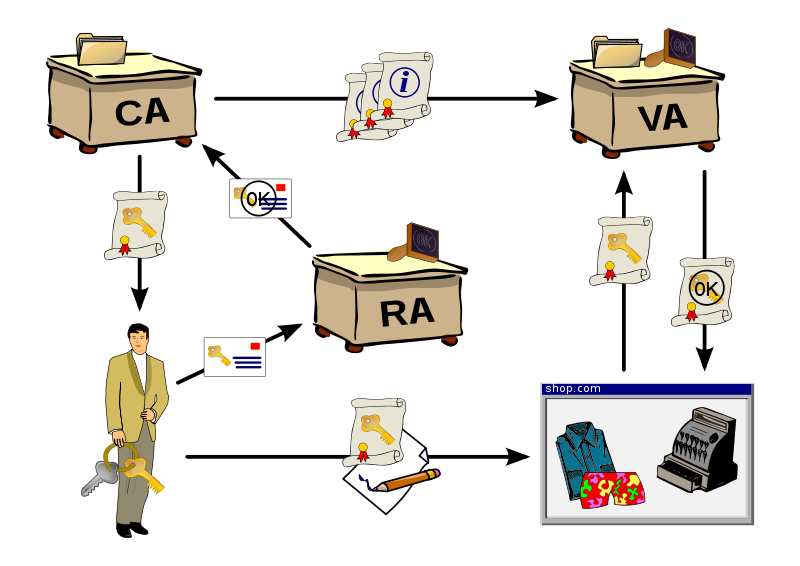

1.1 Motivation
1.2 State-of-the-art technologies and tools
1.2.1 Workshops and meetings attended
1.2.2 Tools
1 AuthN and AuthZ technologies
2.1 Public Key Infrastructure (PKI)
2.2 Kerberos
2.2.1 Concepts
2.2.2 Protocols
2.2.3 Heimdal
2.3 LDAP
2.3.1 OpenLDAP
2.4 Integrating OpenLDAP with Kerberos Heimdal
2.4.1 Set the virtual machines
2.4.2 Installation and configuration of Heimdal
3 Use case for FAIR
Chef
1 Federated Identity Management on scientific collaborations
CRISP (Cluster of Research Infrastructures for Synergies in Physics) is a partnership which builds collaborations and creates long-term synergies between research infrastructures on the ESFRI (European Strategy Forum on Research Infrastructure). It is built on several work programmes that are splitted in WP (Work Packages). I am involved in IT & DATA MANAGEMENT WORK PROGRAMME, specifically in WP16 “IT & DM: Common User Identity System”.
The objetives of my new project are to develop and deploy a pan-European system for unique identification (Authentication and authorisation infrastructure: AAI) of users at the infrastructures of the participating RIs EuroFEL (PSI), ESRF, ESS, FAIR (GSI), ILL, and XFEL for the management of local and remote access to facilities, experiments, data, and IT resources.
Identity Management System is the set of tools needed to manage the identity of people. (Wikipedia source)An IdM (Identity Management) system comprises:
- Establishment of the identity.
- Describes the identity.
- Follows identity activity.
- Destroys the identity.
When we talk about Federated IdM the we are providing a mean for partner services to agree on and establish a common, shared name identifier to refer to the user in order to share information about the user across the organizational boundaries.
1.1 Motivation
The main goal of look into Federated access for scientific communities is to create a unique identification (AAI) system. An authentication and authorisation mechanism common to all users of different RIs can greatly simplify the access to distributed resources. Also considering that the user community in Science is growing, it would be benefitial to keep the number of accounts to a minimum, this is to keep only one account for each user in the Federation. With this approach, a user would have less barriers when accessing remote resources. Also, federated identity management is good for security because it reduces the amount of accounts needed for a user (identity providers have the attention of attackers). There are a set of common needs from those communities (gathered in the 1st workshop on Federated Identity Management in Scientific Collaborations):
- Need for single-sign on access.
- Ease of use for part-time users.
- Controlling access to the resources.
- Support for homeless researchers.
- Interoperability accross national boundaries.
- Trust is needed with accreditation. IGTF is already in use by many of the communities.
- Traceability.
- Enable federated access from grids of High Performance Computing, as well as High Troughput Computing and new Distributed computing resources, such as Clouds, Supercomputing networks and Desktops grids.
1.2 State-of-the-art technologies and tools
1.2.1 Workshops and meetings attended
As a first step I will research the state-of-the-art technologies and tools currently used or being adopted by other scientific collaborations. I attended the 1st workshop on Federated Identity Management in Scientific Collaborations and the 2nd workshop on Federated Identity Management in Scientific Collaborations, where the main user-requirements, existing technologies and vision on this subject were presented.
This is more or less the set of scenarios described and the tools that each of them is using currently.
| Organisation | #users | Main concern | Tool used |
|---|---|---|---|
| PSI | ~ 10000 | Very big datasets, that want to access remotely. Very short lived users. Homeless users. | Umbrella (shibboleth + SAML) |
| CLARIN | hundreds | Single domain with identity managed by home institute. Many diverse and distributed data sets with complex relations in between them. | eduGAIN (Shibboleth + SAML) |
| DARIAH | hundreds | VRE-Integration of homeless users and Job-Submission (e.g. Globus, gLite) through Shibboleth, based on Robot Certificates and Short-Lived-Credentials. Researching eduGAIN and integration with user-centered mechanisms like openID | Shibboleth |
| WLCG | ~5900 | IGFT is the approach to federated IdM. This solution does not scale. In the Grid it is difficult to identify the original source of compromise. x509 needs to be supported (security token service) | x509 |
| ESGF (earth system grid fed.) | ~5000 | Already many technologies existing.Single sign on with OpenID and MyProxy.Attribute propagation with SAML and OpenID. Authorisation with SAML. | openID + SAML |
| OSG (open science grid) | They want to integrate together InCommon and IGTF | SAML + Shibboleth + x509 |
1.2.2 Tools
There are a number of technologies implied in the current scenarios of federated identity:
- SAML
- Discovery problem is a well known problem in the federated identity topic.
2 AuthN and AuthZ technologies
This is a review for the state-of-the-art major authN and authZ technologies.
2.1 Public Key Infrastructure (PKI)
A public key infrastructure consists of:
- A certificate authority (CA) that issues and verifies digital certificate. A certificate includes the public key or information about the public key.
- A registration authority (RA) that acts as the verifier for the certificate authority before a digital is issued.
- One or more directories where the certificates (with their public keys) are held.

2.2 Kerberos
Kerberos is a secure, single-sign-on, trusted, third-party mutual authentication service. There is a component called Key Distribution Center (KDC) that consists of three logical components: a database of all principals and their associated encryption keys, the Authentication Server, and the Ticket Granting Server.
2.2.1 Concepts
Principal: Every entity contained within a Kerberos installation, including individual users, computers, and services running on servers, has a principal associated with it. Each principal is associated with a long-term key.
Realm: Each Kerberos installation defines an administrative realm of control that is distinct from every other Kerberos installation.
Key: Are shared in between two parties, a user or service and the KDC.
Authentication Server: The Authentication Server (AS) issues an encrypted Ticket Granting Ticket (also known as a TGT) to clients who wish to “log in” to the Kerberos realm. The client does not have to prove its identity to the KDC; instead, the TGT that is sent back to the client is encrypted in the user’s password. Since only the user and the KDC know the user’s password, when the login process attempts to decrypt the ticket using the password supplied by the user, only the correct password will correctly decrypt the ticket. If an incorrect password is used, the ticket will decrypt into garbage, and the user is prompted to try again.
Key Distribution Center : described before.
Ticket Granting Server: issues individual service tickets to clients as they request them.
Ticket: it is like a license (issued by the KDC) that confirms your identity. Just like a license in the real world, each ticket issued by Kerberos includes data about you.
2.2.2 Protocols
Needham-Schroeder Protocol
This protocol is the base of Kerberos AuthN method.
The concept behind the Needham-Schroeder protocol is not to authenticate the user directly by sending a password or password equivalent (such as a hash of the password) to the authentication server. Instead, the Needham-Schroeder protocol provides a mechanism to securely distribute a short-lived encryption key to two parties (a client and a server) so their communication can be secured with the encryption key. The verification of each endpoint’s identity happens to be a side effect of this key exchange process.
The protocol begins with the client contacting the authentication server. The client sends the authentication server a message containing the its own identity and the identity of the application server that it wishes to contact. In addition, the client includes a nonce, or a random value, with its request.
The authentication server receives this information and locates the secret encryption keys it has stored for both the client and application server. It also creates a third key, the session key, which can be used to enable secure communication between the client and application server. This new key is a random key generated by the authentication server, is completely unrelated to the long-term keys of both the client and server, and is never reused.
Next comes the tricky part. In the Needham-Schroeder protocol, the authentication server never communicates directly with the application server, only the client. Therefore, the authentication server sends a reply back to the client that includes the session key and the verified identities of both parties. But how can this message be kept secure from an observer who is watching network traffic to snag these session keys as they pass through the wire? And furthermore, when the client transmits the session key and its identity to the application server, how does the application server know that the client is not lying, and that the message is authentic? The answer involves several layers of encryption. First, a message is constructed that is intended to be viewed only by the application server. This message includes the name of the requesting client and the session key. To keep this message secure from eavesdropping and tampering by a malicious client, it is encrypted with the long-term key of the application server. Since only the application server and the authentication server know this key, an attacker cannot decrypt this message to alter the contents or steal the session key. In Kerberos terminology, this encrypted message is also known as a ticket.
The message is wrapped inside of another message, this one intended for the client. The client message also includes the name of the application server, a copy of the session key, and a copy of the nonce originally sent in the first message. The whole message is then encrypted with the client’s long-term key. Once all the information has been assembled and encrypted, the authentication server sends it to the client.
ASN.1
ASN.1 is an acronym for Abstract Syntax Notation One. It defines a methodology for describing protocol definitions in an abstract notation, and then provides several methods to convert those abstract definitions into a stream of bytes for transmission over a communications network.
2.2.3 Heimdal
Heimdal is an open source implementation of Kerberos 5.
Here is a very useful video for a crash introduction to Heimdal
2.3 LDAP
LDAP stands for Lightweight Directory Access Protocol it is not itself either hardware or software, but a protocol to define how a client and server interact with each other. An LDAP directory is used to describe a directory whose server corresponds to this protocol.
2.3.1 OpenLDAP
2.4 Integrating OpenLDAP with Kerberos Heimdal
guide 1 guide 22.4.1 Set the virtual machines
We copy the image from /lustre/rz/vpenso/images/debian64-6.0.4-chef-client-0.10.8.kvm.tgz into lxgrid5.gsi.de (this is just an example system).
Inside lxgrid5.gsi.de I have lxcm01.devops.gsi.de as Chef-server. All machines will have Chef-client and will connect to it. Actually, I have chosen to distribute an image with already a chef client on it to save time.
With each virtual machine, we will proceed this way (we are considering we already have defined the network bridge and we have assigned corresponding ip addresses).
amontiel@lxgrid5:/srv/vms/lxb001.devops.gsi.de$ cp -r ../debian64-6.0.4-chef-client-0.10.8/keys/ .
amontiel@lxgrid5:/srv/vms/lxb001.devops.gsi.de$ cp ../debian64-6.0.4-chef-client-0.10.8/disk.img
amontiel@lxgrid5:/srv/vms/lxb001.devops.gsi.de$ virsh create ./libvirt_instance.xml
amontiel@lxgrid5:/srv/vms/lxb001.devops.gsi.de$ vmname lxb001.devops.gsi.de 10.1.1.4
2.6.2 Installation and configuration of Heimdal
This is a summary of a more extensive documentation in heimdal website.
We download the cookbook from gitorius. I have it already on my chef-server at lxcm01.devops.gsi.de.
We can check our cookbooks just by:
devops@lxcm01:~$ knife cookbook list
heimdal 0.0.1
lazydns 0.2.0
nis 0.1.2
ntp 0.1.0
resolv 1.0.0
To connect any machine (lxb001.devops.gsi.de in the example) to chef-server we have to configure the client to connect to the server. We indicate this inside /etc/chef/client.rb:
devops@lxb001:/etc/chef$ cat client.rb
log_level :info
log_location STDOUT
chef_server_url 'http://lxcm01.devops.gsi.de:4000'
validation_client_name "chef-validator"
validation_key "/etc/chef/validation.pem"
client_key "/etc/chef/client.pem"
file_cache_path "/srv/chef/cache"
pid_file "/var/run/chef/chef-client.pid"
Now we copy the validation.pem certificate into the right place. Previosly I have copied this certificate outside the chef-server, in the directory that contains the vm.
amontiel@lxgrid5:/srv/vms/lxb001.devops.gsi.de$ cp ../lxcm01.devops.gsi.de/validation.pem .
amontiel@lxgrid5:/srv/vms/lxb001.devops.gsi.de$ vmput validation.pem /tmp/
Warning: Permanently added '10.1.1.4' (RSA) to the list of known hosts.
validation.pem 100% 1675 1.6KB/s 00:00
amontiel@lxgrid5:/srv/vms/lxb001.devops.gsi.de$ vmssh 'sudo mv /tmp/validation.pem /etc/chef/'
Now if we restart the chef-client inside lxb001.devops.gsi.de, it should connect directly to the chef-server.
devops@lxb001:/etc/chef$ sudo /etc/init.d/chef-client restart
Restarting chef-client: chef-client.
devops@lxb001:/etc/chef$ tail -f /var/log/chef/client.log
[Thu, 10 May 2012 16:21:36 +0200] INFO: *** Chef 0.10.8 ***
[Thu, 10 May 2012 16:21:37 +0200] INFO: Client key /etc/chef/client.pem is not present - registering
[Thu, 10 May 2012 16:21:37 +0200] INFO: HTTP Request Returned 404 Not Found: Cannot load node lxb001.devops.gsi.de
[Thu, 10 May 2012 16:21:37 +0200] INFO: Run List is []
[Thu, 10 May 2012 16:21:37 +0200] INFO: Run List expands to []
[Thu, 10 May 2012 16:21:37 +0200] INFO: Starting Chef Run for lxb001.devops.gsi.de
[Thu, 10 May 2012 16:21:37 +0200] INFO: Running start handlers
[Thu, 10 May 2012 16:21:37 +0200] INFO: Start handlers complete.
[Thu, 10 May 2012 16:21:37 +0200] INFO: Loading cookbooks []
[Thu, 10 May 2012 16:21:37 +0200] WARN: Node lxb001.devops.gsi.de has an empty run list.
[Thu, 10 May 2012 16:21:37 +0200] INFO: Chef Run complete in 0.159305 seconds
[Thu, 10 May 2012 16:21:37 +0200] INFO: Running report handlers
[Thu, 10 May 2012 16:21:37 +0200] INFO: Report handlers complete
We want to run Heimdal server, so we edit the attributes of the node we just created according to our needs. It should look something like this:
{
"normal": {
"tags": [
],
"krb5": {
"adm_server": "lxb001.devops.gsi.de",
"realm_name": "DEVOPS.GSI.DE",
"kdc": "lxb001.devops.gsi.de"
}
},
"name": "lxb001.devops.gsi.de",
"chef_environment": "_default",
"run_list": [
"recipe[heimdal::server]",
"recipe[ntp]"
]
}
With this recipe we have installed the necessary packages, created the initial database and defined the initial ACLs.
We check everything is there the way we want:
- The configuration file for our realm: /etc/krb5.conf
root@lxb001:/home/devops# cat /etc/krb5.conf
[libdefaults]
ticket_lifetime = 28800
dns_lookup_realm = false
dns_lookup_kdc = false
fcc-mit-ticketflags = true
forwardable = TRUE
[realms]
DEVOPS.GSI.DE = {
kdc = lxb001.devops.gsi.de
admin_server = lxb001.devops.gsi.de
default_domain = devops.gsi.de
}
[domain_realm]
devops.gsi.de = DEVOPS.GSI.DE
[logging]
default = FILE:/var/log/heimdal/default.log
To make forwardable tickets we set the option [libdefaults] forwardable = TRUE also in the clients.
- The file where the master key of the whole database is created:
root@lxb001:/home/devops# ls -la /var/lib/heimdal-kdc/m-key
-rw------- 1 root root 74 May 10 16:54 /var/lib/heimdal-kdc/m-key
- The configuration file for the Key Distribution Center (KDC) server
root@lxb001:/home/devops# cat /etc/heimdal-kdc/kdc.conf
[kdc]
dbname = /var/lib/heimdal-kdc/devops.gsi.de
realm = DEVOPS.GSI.DE
acl_file = /etc/heimdal-kdc/kadm5.acl
key_stash_file = /etc/heimdal-kdc/stash
max_life = 24h 0m 0s
max_renewable_life = 7d 0h 0m 0s
master_key_type = des3-cbc-sha1
supported_enctypes = des3-hmac-sha1:normal des-cbc-crc:normal des3-cbc-sha1:normal aes256-cts-hmac-sha1-96
default_principal_flags = +preauth
}
[logging]
kadmind = FILE:/var/log/heimdal/kadmin.log
kpasswdd = FILE:/var/log/heimdal/kpasswdd.log
default = FILE:/var/log/heimdal/heimdal.log
# detach = boolean
# Gives an upper limit on the size of the requests that the kdc is
# willing to handle.
# max-request = integer
# Turn off the requirement for pre-autentication in the initial AS-
# REQ for all principals. The use of pre-authentication makes it
# more difficult to do offline password attacks. You might want to
# turn it off if you have clients that don't support pre-authenti-
# cation. Since the version 4 protocol doesn't support any pre-
# authentication, serving version 4 clients is just about the same
# as not requiring pre-athentication. The default is to require
# pre-authentication. Adding the require-preauth per principal is
# a more flexible way of handling this.
# require-preauth = boolean
# Specifies the set of ports the KDC should listen on. It is given
# as a white-space separated list of services or port numbers.
# ports = 88,750
# The list of addresses to listen for requests on. By default, the
# kdc will listen on all the locally configured addresses. If only
# a subset is desired, or the automatic detection fails, this
# option might be used.
# addresses = list of ip addresses
# respond to Kerberos 4 requests
# enable-kerberos4 = false
# respond to Kerberos 4 requests from foreign realms. This is a
# known security hole and should not be enabled unless you under-
# stand the consequences and are willing to live with them.
# enable-kerberos4-cross-realm = false
# respond to 524 requests
# enable-524 = value of enable-kerberos4
# Makes the kdc listen on port 80 and handle requests encapsulated
# in HTTP.
# enable-http = boolean
# What realm this server should act as when dealing with version 4
# requests. The database can contain any number of realms, but
# since the version 4 protocol doesn't contain a realm for the
# server, it must be explicitly specified. The default is whatever
# is returned by krb_get_lrealm(). This option is only availabe if
# the KDC has been compiled with version 4 support.
# v4-realm = string
# Enable kaserver emulation (in case it's compiled in).
# enable-kaserver = false
- And also, we check the processes running:
root@lxb001:/home/devops# ps -fea | grep heim
root 13456 1 0 10:34 ? 00:00:00 /usr/lib/heimdal-servers/kdc -- config-file=/etc/heimdal-kdc/kdc.conf
root 13457 1 0 10:34 ? 00:00:00 /usr/lib/heimdal-servers/ kpasswdd
root@lxb001:/home/devops# tail -4 /etc/inetd.conf
#:OTHER: Other services
kerberos-adm stream tcp nowait root /usr/sbin/tcpd /usr/lib/heimdal-servers/kadmind
#krb_prop stream tcp nowait root /usr/sbin/tcpd /usr/sbin/hpropd
- We can check locally the database:
root@lxb001:/home/devops# kadmin -l
kadmin> list *
default
kadmin/admin
kadmin/hprop
kadmin/changepw
changepw/kerberos
WELLKNOWN/ANONYMOUS
krbtgt/DEVOPS.GSI.DE
- We change the password for the kadmin/admin user. All modifications of principals are done with with kadmin. A principal has several attributes and lifetimes associated with it. We create a user principal for starting:
root@lxb001:/home/devops# kadmin -l
kadmin> cpw kadmin/admin
kadmin/admin@DEVOPS.GSI.DE's Password:
Verifying - kadmin/admin@DEVOPS.GSI.DE's Password:
kadmin> add almudena
Max ticket life [1 day]:
Max renewable life [1 week]:
Principal expiration time [never]:
Password expiration time [never]:
Attributes []:
almudena@DEVOPS.GSI.DE's Password:
Verifying - almudena@DEVOPS.GSI.DE's Password:
kadmin> list *
default
almudena
kadmin/admin
kadmin/hprop
kadmin/changepw
changepw/kerberos
WELLKNOWN/ANONYMOUS
krbtgt/DEVOPS.GSI.DE
kadmin> list -l almudena
Principal: almudena@DEVOPS.GSI.DE
Principal expires: never
Password expires: never
Last password change: 2012-05-11 09:52:26 UTC
Max ticket life: 1 day
Max renewable life: 1 week
Kvno: 1
Mkvno: unknown
Last successful login: never
Last failed login: never
Failed login count: 0
Last modified: 2012-05-11 09:52:26 UTC
Modifier: kadmin/admin@DEVOPS.GSI.DE
Attributes:
Keytypes: aes256-cts-hmac-sha1-96(pw-salt), des3-cbc-sha1(pw-salt), arcfour-hmac-md5(pw-salt)
PK-INIT ACL:
Aliases:
- We will allow the user kadmin/admin to access remotely. We set this in the acl:
root@lxb001:/home/devops# cat /etc/heimdal-kdc/kadmind.acl
#principal [priv1,priv2,...] [glob-pattern]
kadmin/admin all
root@lxb001:/home/devops# /etc/init.d/heimdal-kdc restart
Stopping Heimdal password server: kpasswdd.
Stopping Heimdal KDC: heimdal-kdc.
Starting Heimdal KDC: heimdal-kdc.
Starting Heimdal password server: kpasswdd.
For the clients, we change the recipe to be executed to heimdal::client, like this:
{
"normal": {
"tags": [
],
"krb5": {
"adm_server": "lxb001.devops.gsi.de",
"realm_name": "DEVOPS.GSI.DE",
"kdc": "lxb001.devops.gsi.de"
}
},
"name": "lxb002.devops.gsi.de",
"chef_environment": "_default",
"run_list": [
"recipe[heimdal::client]",
"recipe[ntp]"
]
}
We check that everything is there in the way we want:
- The configuration file is the same as in the server: /etc/krb5.conf
- The processes running.
Because we added before in the ACL the access to the admin user, then we should be able to access through it. We need to create a principal for the ssh server.
devops@lxb002:/etc$ /usr/sbin/kadmin -p kadmin/admin
kadmin> list *
kadmin/admin@DEVOPS.GSI.DE's Password:
default
almudena
kadmin/admin
kadmin/hprop
kadmin/changepw
changepw/kerberos
WELLKNOWN/ANONYMOUS
krbtgt/DEVOPS.GSI.DE
kadmin> add --random-key host/lxb002.devops.gsi.de
Max ticket life [1 day]:
Max renewable life [1 week]:
Principal expiration time [never]:
Password expiration time [never]:
Attributes []:
kadmin> list *
default
almudena
kadmin/admin
kadmin/hprop
kadmin/changepw
changepw/kerberos
WELLKNOWN/ANONYMOUS
krbtgt/DEVOPS.GSI.DE
host/lxb002.devops.gsi.de
kadmin> ext_keytab --keytab=/tmp/keytab host/lxb002.devops.gsi.de
kadmin> exit
devops@lxb002:~$sudo mv /tmp/keytab /etc/krb5.keytab
Our sample client will be a ssh server.
We modify the configuration of our ssh server to accept API authentication:
root@lxb002:/etc# echo "GSSAPIAuthentication yes" >> /etc/ssh/sshd_config
root@lxb002:/etc# echo "KerberosAuthentication yes" >>/etc/ssh/sshd_config
root@lxb002:/etc# /etc/init.d/ssh restart
root@lxb002:/etc# useradd -m -s /bin/bash almudena # we dont set a password, we will use kerberos
We also need to configure the ssh client to be able to forward the tickets to another hosts.
root@lxb002:/home/devops# cat /etc/ssh/ssh_config
Host *
SendEnv LANG LC_*
HashKnownHosts yes
GSSAPIAuthentication yes
GSSAPIDelegateCredentials yesNow we install a third machine, with heimdal::client too. This will be the ssh client testing the ssh-server kerberized with the account almudena.
- We create again here an account with no password:
root@lxb003:/home/devops# useradd -m -s /bin/bash almudena
devops@lxb003:~$ su - almudena
Password:
almudena@lxb003:~$ klist
Credentials cache: FILE:/tmp/krb5cc_1001_EI5sxs
Principal: almudena@DEVOPS.GSI.DE
Issued Expires Principal
May 11 12:35:16 May 11 22:35:16 krbtgt/DEVOPS.GSI.DE@DEVOPS.GSI.DE
This is what we see in the kdc log file:
2012-05-11T12:35:16 ENC-TS Pre-authentication succeeded – almudena@DEVOPS.GSI.DE using aes256-cts-hmac-sha1-96
2012-05-11T12:35:16 AS-REQ authtime: 2012-05-11T12:35:16 starttime: unset endtime: 2012-05-11T22:35:16 renew till: unset
2012-05-11T12:35:16 Client supported enctypes: aes256-cts-hmac-sha1-96, aes128-cts-hmac-sha1-96, des3-cbc-sha1, des3-cbc-md5, arcfour-hmac-md5, using aes256-cts-hmac-sha1-96/aes256-cts-hmac-sha1-96
2012-05-11T12:35:16 Requested flags: proxiable, forwardable
2012-05-11T12:35:16 sending 667 bytes to IPv4:10.1.1.6We attempt now to connect to the ssh server, this is the kdc output
2012-05-11T12:38:29 AS-REQ almudena@DEVOPS.GSI.DE from IPv4:10.1.1.5 for krbtgt/DEVOPS.GSI.DE@DEVOPS.GSI.DE
2012-05-11T12:38:29 No preauth found, returning PREAUTH-REQUIRED – almudena@DEVOPS.GSI.DE
2012-05-11T12:38:29 sending 279 bytes to IPv4:10.1.1.5
2012-05-11T12:38:29 AS-REQ almudena@DEVOPS.GSI.DE from IPv4:10.1.1.5 for krbtgt/DEVOPS.GSI.DE@DEVOPS.GSI.DE
2012-05-11T12:38:29 Client sent patypes: encrypted-timestamp
2012-05-11T12:38:29 Looking for PKINIT pa-data – almudena@DEVOPS.GSI.DE
2012-05-11T12:38:29 Looking for ENC-TS pa-data – almudena@DEVOPS.GSI.DE
2012-05-11T12:38:29 ENC-TS Pre-authentication succeeded – almudena@DEVOPS.GSI.DE using aes256-cts-hmac-sha1-96
2012-05-11T12:38:29 AS-REQ authtime: 2012-05-11T12:38:29 starttime: unset endtime: 2012-05-11T22:38:29 renew till: unset
2012-05-11T12:38:29 Client supported enctypes: aes256-cts-hmac-sha1-96, aes128-cts-hmac-sha1-96, des3-cbc-sha1, des3-cbc-md5, arcfour-hmac-md5, using aes256-cts-hmac-sha1-96/aes256-cts-hmac-sha1-96
2012-05-11T12:38:29 Requested flags: proxiable, forwardable
2012-05-11T12:38:29 sending 667 bytes to IPv4:10.1.1.5
2012-05-11T12:38:29 TGS-REQ almudena@DEVOPS.GSI.DE from IPv4:10.1.1.5 for host/lxb002.devops.gsi.de@DEVOPS.GSI.DE [canonicalize]
2012-05-11T12:38:29 TGS-REQ authtime: 2012-05-11T12:38:29 starttime: 2012-05-11T12:38:29 endtime: 2012-05-11T22:38:29 renew till: unset
2012-05-11T12:38:29 sending 676 bytes to IPv4:10.1.1.5
We implement the SSO with forwardable tickets.
But there is a weird thing right now:
almudenilla@lxb003:~$ man kinit
KINIT(1) BSD General Commands Manual KINIT(1)
NAME
kinit — acquire initial tickets
(...)
-f, --forwardable
Get ticket that can be forwarded to another host.
But the command does
almudenilla@lxb003:~$ kinit --help
(...)
-f, --no-forwardable get forwardable ticketsAnd when we do, we get the following log messages in the KDC:
2012-05-30T14:07:51 AS-REQ almudenilla@DEVOPS.GSI.DE from IPv4:10.1.1.6 for krbtgt/DEVOPS.GSI.DE@DEVOPS.GSI.DE
2012-05-30T14:07:51 No preauth found, returning PREAUTH-REQUIRED -- almudenilla@DEVOPS.GSI.DE
2012-05-30T14:07:51 sending 285 bytes to IPv4:10.1.1.6
2012-05-30T14:07:51 AS-REQ almudenilla@DEVOPS.GSI.DE from IPv4:10.1.1.6 for krbtgt/DEVOPS.GSI.DE@DEVOPS.GSI.DE
2012-05-30T14:07:51 Client sent patypes: encrypted-timestamp
2012-05-30T14:07:51 Looking for PKINIT pa-data -- almudenilla@DEVOPS.GSI.DE
2012-05-30T14:07:51 Looking for ENC-TS pa-data -- almudenilla@DEVOPS.GSI.DE
2012-05-30T14:07:51 ENC-TS Pre-authentication succeeded -- almudenilla@DEVOPS.GSI.DE using aes256-cts-hmac-sha1-96
2012-05-30T14:07:51 AS-REQ authtime: 2012-05-30T14:07:51 starttime: unset endtime: 2012-05-31T00:07:51 renew till: unset
2012-05-30T14:07:51 Client supported enctypes: aes256-cts-hmac-sha1-96, aes128-cts-hmac-sha1-96, des3-cbc-sha1, des3-cbc-md5, arcfour-hmac-md5, using aes256-cts-hmac-sha1-96/aes256-cts-hmac-sha1-96
2012-05-30T14:07:51 Requested flags: proxiable
2012-05-30T14:07:51 sending 676 bytes to IPv4:10.1.1.6
We try to log in to lxb002 itself and we do not get the ticket forwarded to another host. Instead, we are asked the password:
almudenilla@lxb003:~$ kinit -f
almudenilla@DEVOPS.GSI.DE's Password:
almudenilla@lxb003:~$ ssh lxb002
Linux lxb002 2.6.32-5-amd64 #1 SMP Mon Jan 16 16:22:28 UTC 2012 x86_64
The programs included with the Debian GNU/Linux system are free software;
the exact distribution terms for each program are described in the
individual files in /usr/share/doc/*/copyright.
Debian GNU/Linux comes with ABSOLUTELY NO WARRANTY, to the extent
permitted by applicable law.
Last login: Wed May 30 16:09:43 2012 from lxb003.devops.gsi.de
almudenilla@lxb002:~$ ssh lxb003
almudenilla@lxb003's password:
So, in summary, the requirements are:
- Any ssh server that we want to log into, should be configured to be able to get kerberos authn. Set "GSSAPIAuthentication yes" and "KerberosAuthentication yes" in /etc/ssh/sshd_config.
- Any ssh server should be a principle inside Heimdal.
- We should invoke tickets with no "-f" option.
3 Use case for FAIR
The actual use case for FAIR would be a computing center, located at GSI, and at LOEWE. Eventually, satellite Universities or scientific organizations, geographycally close, may take part of the infrastructure. A user may send a job from GSI facility and use data from LOEWE file systems. So mainly the federated access would be towards file systems and remote computing from long-term users.
Current technologies federating access to resources mostly rely on applications running on an HTTP agent. Such is the case of Shibboleth, running on top of SAML. These technologies have been used widely in todays outsourced resources, like Google mail accounts, and generally in Internet2 applications. These solutions allow an organization providing services over the web to consume the identities of its research partners, business partners, customers or other affiliates. The users would use the same credential as they are using for accessing their local resources.
We are more interested in federating access to resources that do not rely in a HTTP agent. However, today there is no good solution to take this federated identity management to applications beyond the web such as e-mail, instant messaging, file sharing, or remote computing. Moonshot is the effort to federate access tu such resources.
These are the main applications we are interested in federate:
- Remote computing.
- File systems, such as ext3, NFS, Lustre.
Nowadays, Moonshot does not have a solution for Lustre. There have been some efforts to solve this problem inside the project Tera Grid. In this context, the project Data Capacitor from the University of Indiana, have developed a large data storage system based on use of the Lustre file system.
Lustre WAN is a project inside Data Capacity that enables Lustre file systems, as it has been demonstrated to have exceptional capabilities, to be able to move data to inside Tera Grid from outside institutions. For this it was necessary to ensure that access to files and permissions could be managed properly. This solution is explained in Enabling Lustre WAN for Production Use on the TeraGrid
1 Chef server
In order to create a testing infrastructure the best is to use some configuration management that allows automatization. It is necessary to be able to create-destroy-recreate any infrastructure. This is also a requirement policy on the Configuration Management phylosophy at GSI. Chef will be used.
In this case, I deploy an independent network only visible inside the machine lxgrid5, because so far it is not as relevant work as to make it accessible. I will follow the chef-server model, one node will be a workstation running chef-server. The other nodes will run a chef client and will be configured from the server.
All the virtual machines (VMs) will run under a NATed subnetwork. This is the current configuration:
amontiel@depc318:~/srv/vms/instances/lxcm01.devops.test/$ virsh net-dumpxml nat_bridge
<network>
<name>nat_bridge</name>
<uuid>40aa03bf-ba9a-e5e1-5566-8f8ecab56d5b</uuid>
<forward mode='nat'/>
<bridge name='nbr0' stp='on' delay='0' />
<domain name='devops.test'/>
<ip address='10.1.1.1' netmask='255.255.255.0'>
<dhcp>
<range start='10.1.1.20' end='10.1.1.254' />
<host mac='02:FF:0A:0A:06:02' name='lxdns01.devops.test' ip='10.1.1.2' />
<host mac='02:FF:0A:0A:06:03' name='lxcm01.devops.test' ip='10.1.1.3' />
<host mac='02:FF:0A:0A:06:04' name='lxrm01.devops.test' ip='10.1.1.4' />
<host mac='02:FF:0A:0A:06:05' name='lxb001.devops.test' ip='10.1.1.5' />
<host mac='02:FF:0A:0A:06:06' name='lxb002.devops.test' ip='10.1.1.6' />
<host mac='02:FF:0A:0A:06:07' name='lxb003.devops.test' ip='10.1.1.7' />
<host mac='02:FF:0A:0A:06:08' name='lxb004.devops.test' ip='10.1.1.8' />
<host mac='02:FF:0A:0A:06:09' name='lxmon01.devops.test' ip='10.1.1.9' />
<host mac='02:FF:0A:0A:06:0A' name='lxfs01.devops.test' ip='10.1.1.10' />
<host mac='02:FF:0A:0A:06:0B' name='lxdev01.devops.test' ip='10.1.1.11' />
<host mac='02:FF:0A:0A:06:0C' name='lxdev02.devops.test' ip='10.1.1.12' />
<host mac='02:FF:0A:0A:06:0D' name='lxdev03.devops.test' ip='10.1.1.13' />
</dhcp>
</ip>
</network>
The DNS will be installed/configured by using chef-solo, because we will need it before we have the configuration management server. The recipe used will be lazyDNS NOTE WE DO NOT REALLY NEED DNS. Just with the configuration of /etc/resolv.conf and DHCP in each machine it should be enough for basic name resolution.
There will be a VM that will run the configuration management (CM), namely, the chef server. The others will have the chef client installed. The recipes on the CM VM will be in sync with the recipies on the physical host lxgrid5.gsi.de, where the kvm hypervisor is. Following Victor’s guide the following virtual machines are created.
These are the steps to follow: - Provisioning of the VM - Install a Chef Server - Configure your local workstation - Install chef-client on your nodes
1.1 Provisioning of the VM
We will copy the image from Lustre. And we will edit some stuff.
Copy and untar the image:
amontiel@depc318:~/srv/vms/instances/lxcm01.devops.test$ scp lx-pool:/lustre/rz/vpenso/images/debian64-6.0.0-chef-server-0.9.14.kvm.tgz .
amontiel@depc318:~/srv/vms/instances/lxcm01.devops.test$ tar -xvf ./debian64-6.0.0-chef-server-0.9.14.kvm.tgz
Edit the file: libvirt_instance.xml accordingly:
amontiel@depc318:~/srv/vms/instances/lxcm01.devops.test$ cat libvirt_instance.xml
<domain type='kvm'>
<name>lxcm01.devops.test</name>
<memory>524288</memory>
<vcpu>1</vcpu>
<os>
<type arch="x86_64">hvm</type>
</os>
<clock sync="localtime"/>
<devices>
<emulator>/usr/bin/kvm</emulator>
<disk type='file' device='disk'>
<source file='/home/amontiel/srv/vms/instances/lxcm01.devops.test/disk.img'/>
<target dev='hda'/>
<driver name='qemu' type='qcow2'/>
</disk>
<interface type='bridge'>
<source bridge='nbr0'/>
<mac address='02:FF:0A:0A:06:03'/>
</interface>
</devices>
<on_poweroff>destroy</on_poweroff>
<on_reboot>restart</on_reboot>
<on_crash>restart</on_crash>
<features>
<acpi/>
</features>
</domain>
Create the virtual machine with libvirt.
amontiel@depc318:~/srv/vms/instances/lxcm01.devops.test$ virsh create libvirt_instance.xml
We need to change the hostname assigned initialy. We do this by editing /etc/hosts and also executing sudo hostname lxcm01.devops.test.
1.2 Install a Chef server
Just follow the installation guide from Chef.
To be able to manage Chef server, we have to configure the workstation where it is running. We configure this workstation as it was a client of the Chef server itself.
We copy the cookbooks from gitorious:
mkdir ~/chef
cd ~/chef
git clone http://gitorious.gsi.de/site-cookbooks
mkdir -p ~/.chef
sudo cp /etc/chef/validation.pem /etc/chef/webui.pem ~/.chef
sudo chown -R $USER ~/.chef
knife configure -i
Where should I put the config file? [~/.chef/knife.rb]
Please enter the chef server URL: [http://localhost:4000]
Please enter a clientname for the new client: [devops]
Please enter the existing admin clientname: [chef-webui]
Please enter the location of the existing admin client's private key: [/etc/chef/webui.pem] .chef/webui.pem
Please enter the validation clientname: [chef-validator]
Please enter the location of the validation key: [/etc/chef/validation.pem] .chef/validation.pem
If we try to configure Chef-server for a client that is already existing, lets say we made a mistake and would like to redifine this user, the we face this problem (solved): http://tickets.opscode.com/browse/CHEF-2344
We connect clients:
For connecting nodes, which are both: a client and a node inside Chef server, we need to take the validation certificate into the client. We do the following:
amontiel@lxgrid5:/srv/vms/lxcm01.devops.gsi.de$ vmget /etc/chef/validation.pem .
amontiel@lxgrid5:/srv/vms/lxcm01.devops.gsi.de$ cd ../lxid01.devops.gsi.de/
amontiel@lxgrid5:/srv/vms/lxid01.devops.gsi.de$ cp ../lxcm01.devops.gsi.de/validation.pem .
amontiel@lxgrid5:/srv/vms/lxid01.devops.gsi.de$ vmput validation.pem /tmp/
Warning: Permanently added '10.1.1.19' (RSA) to the list of known hosts.
validation.pem
amontiel@lxgrid5:/srv/vms/lxid01.devops.gsi.de$ vmput validation.pem /tmp/
Warning: Permanently added '10.1.1.19' (RSA) to the list of known hosts. validation.pem 100% 1675 1.6KB/s 00:00
amontiel@lxgrid5:/srv/vms/lxid01.devops.gsi.de$ vmssh
Linux lxid01 2.6.32-5-amd64 #1 SMP Thu Mar 22 17:26:33 UTC 2012 x86_64
The programs included with the Debian GNU/Linux system are free software;
the exact distribution terms for each program are described in the
individual files in /usr/share/doc/*/copyright.
Debian GNU/Linux comes with ABSOLUTELY NO WARRANTY, to the extent
permitted by applicable law.
Last login: Fri Mar 30 14:44:30 2012 from 10.1.1.1
devops@lxid01:~$ sudo -s
root@lxid01:/home/devops# mv /tmp/validation.pem /etc/chef/validation.pem
root@lxid01:/home/devops# /etc/init.d/chef-client restart
Restarting chef-client: chef-client.